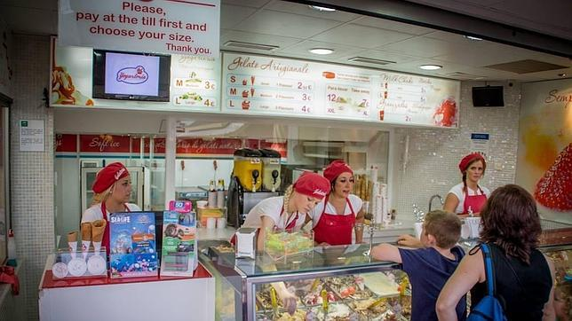
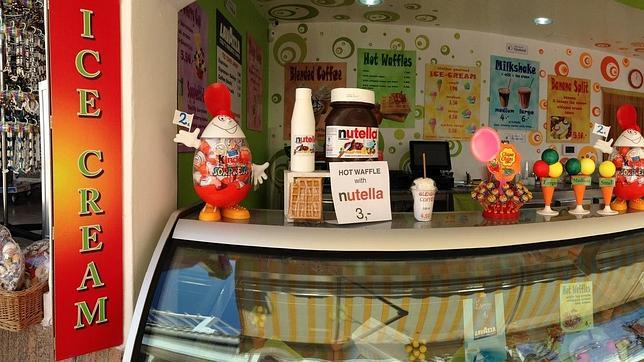
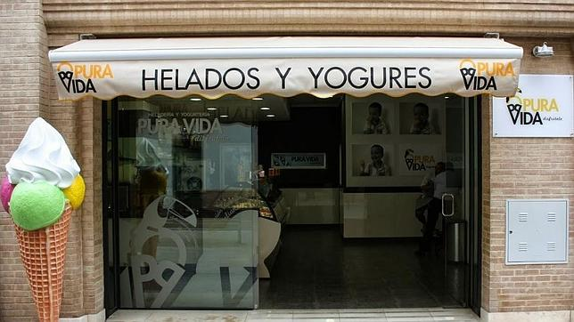
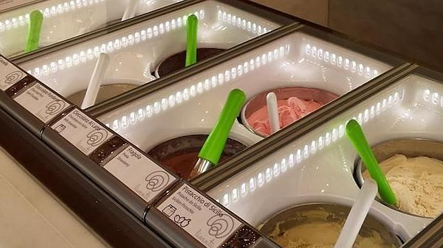
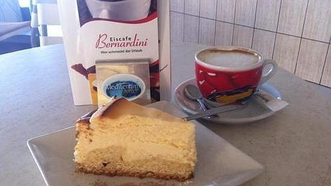

LAS 5 MEJORES HELADERIAS DE ESPAÑA
1.-Gelateria Di Porto Marina, Benalmádena

Cuando el calor aprieta nada mejor que refrescar el paladar con un buen helado. Sabores para todos los gustos, desde los clásicos de limón, chocolate o fresa hasta otros más originales a base de queso o frutos secos, las heladerías españolas se hacen fuertes en los meses de verano con adeptos de todas las edades.
Andalucía, Baleares, Comunidad Valenciana, Canarias y Cataluña concentran los establecimientos con los mejores helados de España pero solo diez consiguen el premio de los viajeros de TripAdvisor que han elegido sus establecimientos preferidos.
Gelateria Di Porto Marina, Benalmádena
Situada en Porto Marina, Benalmádena (Málaga), se pueden degustar una gran variedad de sabores de helados, hechos a diario y artesanalmente con ingredientes naturales, desde su helado milhojas de turrón, el original Banana split al tradicional helado de chocolate.
Un usuario comenta: «Tienen una gran variedad de sabores y sus helados tienen un sabor muy auténtico. Su cremosidad y consistencia hacen que sus helados sean de los mejores que haya probado. Es obligatorio probarlos. No te los pierdas»

Ubicado en la zona centro de Cala dŽOr, en Mallorca, camino de las calles principales de tiendas y restaurantes. Cuenta con una gran selección de helados de diferentes sabores, crepes y gofres. Un usuario de TripAdvisor comenta: «Los mejores helados que he probado en toda mi vida, son deliciosos».

Sus helados son 100% artesanales, contienen hasta un 40% de fruta natural, ofreciendo helados de alta calidad. Un usuario de TripAdvisor dice: «Encontrarás sabores muy originales, como el de regaliz. Son artesanos de verdad».

Esta heladería artesana siciliana está situada en Alicante y ofrece cada día 36 sabores de helado recién hecho a mano según la tradición heladera de Sicilia, con productos frescos y seleccionados.
La heladería ha sido premiada con el Certificado de Excelencia de TripAdvisor este año. Según un usuario: «Helado italiano de calidad. De las mejores heladerías de Alicante, lo cual no es decir poco en la tierra del helado. Gran variedad de sabores y buen precio».

Esta heladería se encuentra en el paseo marítimo de Cala Millor. Cuentan con su propia fabricación artesanal de helados y tartas ofreciendo helados tanto en cucurucho, vasitos, como en grandes copas. La heladería ha sido premiada con el Certificado de Excelencia de TripAdvisor este año. Un usuario comenta: «Disfrute puro. Ambiente con vista directa al mar, y un servicio amable y rápido. Una mirada al interior muestra una perfecta limpieza y los productos -pasteles, helados, desayuno)-de producción propia, siempre frescos y deliciosos».